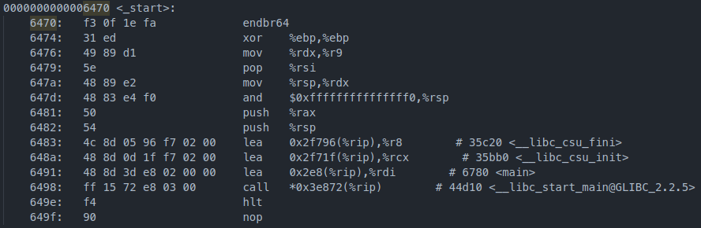
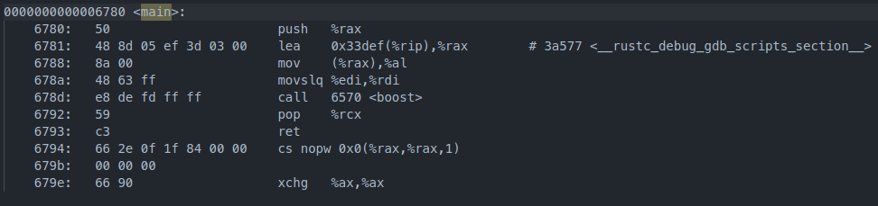
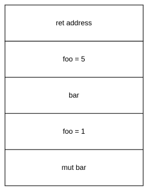
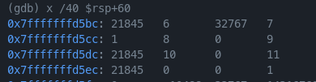
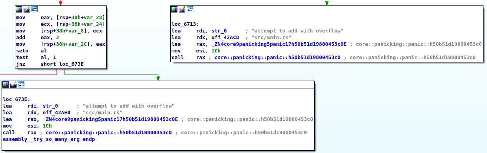

Rust基础语句汇编分析
作者：李睿
作者正在积极寻找寒暑假实习机会，如果您能提供帮助，请通过文章底部的联系方式联系作者，不胜感激。
从开始接触Rust以来，我一直在惊叹于Rust的安全、高效，享受Rust带来的开发的愉悦。但随着开发的Rust项目越来越多，我的疑惑也逐渐增大，我们知道Rust可以很好的工作，但它是如何运作的？Rust是怎么处理每一条match语句的？是怎么传递参数的？
下面我们尝试去理解它，窥视Rust运作原理的一部分（非常小的一部分）。我们将编写一系列包含简单语句的函数，用静态分析工具分析汇编指令，搞明白程序是怎么执行的。希望这篇文章能够帮助到您，当然这篇文章可能包含部分甚至完全的错误，如果您能够在评论区指出，既能够帮助作者纠正错误，也能让其他读者免受作者之害（笑）。
本文的代码
作者的二进制水平有限，目前只能对于简单的语句进行分析，因此我们的第一篇文章就围绕下面的简单代码展开，争取搞懂每一个函数。作者事先也没有分析过Rust的二进制，希望能在写这篇文章的时候和读者一起学习。如果遇到带有疑问的地方，作者会用加粗字体标识，大家可以一起讨论。
在编译代码的时候，我们的项目名称为assembly，使用debug编译，而非release。
#![feature(start)]
#[start]
#[no_mangle]
fn boost(argc: isize, argv: *const *const u8) -> isize {
mangled();
try_variable();
try_match();
try_match_with_arg(1);
try_so_many_arg(0, 1, 2, 3, 4, 5, 6, 7, 8, 9, 10, 11);
try_str_arg("wow");
0
}
fn mangled() {}
#[no_mangle]
fn try_variable() {
let foo = 1;
let bar = 2;
let mut bar = 3;
bar += 1;
let foo = 5;
}
#[no_mangle]
fn try_match() {
let mut foo = 1;
match foo {
1 => {
foo = 2;
}
_ => {
foo = 3;
}
}
}
#[no_mangle]
fn try_match_with_arg(foo: i32) -> i32 {
match foo {
1 => {
0
}
2 => {
1
}
_ => {
2
}
}
}
#[no_mangle]
fn try_so_many_arg(a: i32, b: i32, c: i32, d: i32, e: i32, f: i32, g: i32, h: i32, i: i32, j: i32, k: i32, l: i32) {
let a = a + 1;
let b = b + 2;
}
#[no_mangle]
fn try_str_arg(s: &str) {
let _ = s.len();
}
#[no_mangle]是什么
本节对应的RFC页面：2603-rust-symbol-name-mangling-v0
在Rust中，我们程序中的符号在编译时会经过名字修饰这一过程，这是为了保证实体名字必须唯一的一种技术。比如我们的函数名为mangled，在经过名字修饰后，函数名会变为类似_ZN8assembly7mangled17hdae1ffd2c2da5f53E的一串，具体的规则可以查看RFC中的讲述。为了保证我们可以轻松找到编译后的函数，我们需要为函数加上#[no_mangle]这一属性，保证函数保留原本的名称。
#[start]是什么
相信部分读者已经注意到了，我们的函数没有main函数，而是为boost加上了start属性。Rust和C语言不一样，我们一般情况编写的main函数在编译后同样会经过上面说的名字修饰。而Rust在执行时，会经过_start -> main -> our_main的过程，我们的main函数实际上是被调用的，而不是入口！
下面我们来验证：
首先读取ELF头，得到入口点地址为0x6470。
ELF 头：
Magic： 7f 45 4c 46 02 01 01 00 00 00 00 00 00 00 00 00
类别: ELF64
数据: 2 补码，小端序 (little endian)
Version: 1 (current)
OS/ABI: UNIX - System V
ABI 版本: 0
类型: DYN (共享目标文件)
系统架构: Advanced Micro Devices X86-64
版本: 0x1
入口点地址： 0x6470
程序头起点： 64 (bytes into file)
Start of section headers: 3585048 (bytes into file)
标志： 0x0
Size of this header: 64 (bytes)
Size of program headers: 56 (bytes)
Number of program headers: 14
Size of section headers: 64 (bytes)
Number of section headers: 43
Section header string table index: 42
查看Objdump的结果：

而main函数：

验证成功！
这里我们想为main设置no_mangle属性，但实际上已经有一个main了，重复的符号是不允许的，因此我们需要使用start+no_mangle来自定义我们程序的“入口”。
boost函数
源码
fn boost(argc: isize, argv: *const *const u8) -> isize {
try_variable();
try_match();
try_match_with_arg(1);
try_so_many_arg(0, 1, 2, 3, 4, 5, 6, 7, 8, 9, 10, 11);
try_str_arg("wow");
0
}
汇编
0000000000006570 <boost>:
6570: 48 83 ec 48 sub $0x48,%rsp
6574: 48 89 7c 24 38 mov %rdi,0x38(%rsp)
6579: 48 89 74 24 40 mov %rsi,0x40(%rsp)
657e: e8 7d 00 00 00 call 6600 <_ZN8assembly7mangled17hdae1ffd2c2da5f53E>
6583: e8 88 00 00 00 call 6610 <try_variable>
6588: e8 b3 00 00 00 call 6640 <try_match>
658d: bf 01 00 00 00 mov $0x1,%edi
6592: e8 c9 00 00 00 call 6660 <try_match_with_arg>
6597: 31 ff xor %edi,%edi
6599: be 01 00 00 00 mov $0x1,%esi
659e: ba 02 00 00 00 mov $0x2,%edx
65a3: b9 03 00 00 00 mov $0x3,%ecx
65a8: 41 b8 04 00 00 00 mov $0x4,%r8d
65ae: 41 b9 05 00 00 00 mov $0x5,%r9d
65b4: c7 04 24 06 00 00 00 movl $0x6,(%rsp)
65bb: c7 44 24 08 07 00 00 movl $0x7,0x8(%rsp)
65c2: 00
65c3: c7 44 24 10 08 00 00 movl $0x8,0x10(%rsp)
65ca: 00
65cb: c7 44 24 18 09 00 00 movl $0x9,0x18(%rsp)
65d2: 00
65d3: c7 44 24 20 0a 00 00 movl $0xa,0x20(%rsp)
65da: 00
65db: c7 44 24 28 0b 00 00 movl $0xb,0x28(%rsp)
65e2: 00
65e3: e8 c8 00 00 00 call 66b0 <try_so_many_arg>
65e8: 48 8d 3d 11 fa 02 00 lea 0x2fa11(%rip),%rdi # 36000 <_fini+0x3d8>
65ef: be 03 00 00 00 mov $0x3,%esi
65f4: e8 67 01 00 00 call 6760 <try_str_arg>
65f9: 31 c0 xor %eax,%eax
65fb: 48 83 c4 48 add $0x48,%rsp
65ff: c3 ret
伪代码
isize __fastcall assembly::boost(isize argc, u8 **argv)
{
_str v2; // rdi
assembly::mangled::hdae1ffd2c2da5f53();
assembly::try_variable();
assembly::try_match();
assembly::try_match_with_arg(1);
assembly::try_so_many_arg(0, 1, 2, 3, 4, 5, 6, 7, 8, 9, 10, 11);
v2.data_ptr = (u8 *)"wowsrc/main.rs";
v2.length = 3LL;
assembly::try_str_arg(v2);
return 0LL;
}
分析
在我们boost函数中，包含了一系列函数调用和参数传递，从中可以看出：Rust中的参数传递，前六个参数放到rdi rsi rdx rcx r8d r9d寄存器，之后的参数放入栈中。
而对于&str类型，Rust会用一个结构去存储，这个结构包含下面两个元素：
- data_ptr：指向数据地址的指针
- length：长度
这里我们的第一个放置了指向"wow"的地址，其保存在.rodata段中。第二个参数为3，代表&str的长度为3。如果不指定长度，&str也不像C语言会以'\0'进行截断，我们将不知道&str的值为什么。
最后的返回值部分可以看到eax用异或清零，直接返回。
try_variable函数
源码
fn try_variable() {
let foo = 1;
let bar = 2;
let mut bar = 3;
bar += 1;
let foo = 5;
}
汇编
0000000000006610 <try_variable>:
6610: 48 83 ec 10 sub $0x10,%rsp
6614: c7 44 24 04 01 00 00 movl $0x1,0x4(%rsp)
661b: 00
661c: c7 44 24 08 02 00 00 movl $0x2,0x8(%rsp)
6623: 00
6624: c7 04 24 03 00 00 00 movl $0x3,(%rsp)
662b: c7 04 24 04 00 00 00 movl $0x4,(%rsp)
6632: c7 44 24 0c 05 00 00 movl $0x5,0xc(%rsp)
6639: 00
663a: 48 83 c4 10 add $0x10,%rsp
663e: c3 ret
663f: 90 nop
分析
在Rust中i32的类型会占用4Byte内存，在函数头部我们可以看到栈顶地址被减去16Byte为局部变量开辟空间，此时栈的分布如下：

由于Rust中支持变量遮蔽，我们能够重复声明foo和bar变量并赋值，但他们都拥有各自的内存空间，而不是覆盖原有的空间。同时编译器已经为我们把加法优化为了mov指令直接赋值。
在可变性上，Rust会在编译上为我们强调mut和非mut的区别，而实际的编译结果是看不出来的。
try_match函数
源码
fn try_match() {
let mut foo = 1;
match foo {
1 => {
foo = 2;
}
_ => {
foo = 3;
}
}
}
汇编
0000000000006640 <try_match>:
6640: 48 83 ec 04 sub $0x4,%rsp
6644: c7 04 24 01 00 00 00 movl $0x1,(%rsp)
664b: c7 04 24 02 00 00 00 movl $0x2,(%rsp)
6652: 48 83 c4 04 add $0x4,%rsp
6656: c3 ret
6657: 66 0f 1f 84 00 00 00 nopw 0x0(%rax,%rax,1)
665e: 00 00
分析
我们可以看到这里编译器已经为我们优化了代码，由于match的变量可知，所以只需要包含值为1的分支即可。
这里抛出一个疑问：最后的nopw指令有何作用？
try_match_with_arg函数
源码
#[no_mangle]
fn try_match_with_arg(foo: i32) -> i32 {
match foo {
1 => {
0
}
2 => {
1
}
_ => {
2
}
}
}
汇编
0000000000006660 <try_match_with_arg>:
6660: 48 83 ec 0c sub $0xc,%rsp
6664: 89 3c 24 mov %edi,(%rsp)
6667: 89 7c 24 08 mov %edi,0x8(%rsp)
666b: 83 ef 01 sub $0x1,%edi
666e: 74 16 je 6686 <try_match_with_arg+0x26>
6670: eb 00 jmp 6672 <try_match_with_arg+0x12>
6672: 8b 04 24 mov (%rsp),%eax
6675: 83 e8 02 sub $0x2,%eax
6678: 74 16 je 6690 <try_match_with_arg+0x30>
667a: eb 00 jmp 667c <try_match_with_arg+0x1c>
667c: c7 44 24 04 02 00 00 movl $0x2,0x4(%rsp)
6683: 00
6684: eb 12 jmp 6698 <try_match_with_arg+0x38>
6686: c7 44 24 04 00 00 00 movl $0x0,0x4(%rsp)
668d: 00
668e: eb 08 jmp 6698 <try_match_with_arg+0x38>
6690: c7 44 24 04 01 00 00 movl $0x1,0x4(%rsp)
6697: 00
6698: 8b 44 24 04 mov 0x4(%rsp),%eax
669c: 48 83 c4 0c add $0xc,%rsp
66a0: c3 ret
66a1: 66 2e 0f 1f 84 00 00 cs nopw 0x0(%rax,%rax,1)
66a8: 00 00 00
66ab: 0f 1f 44 00 00 nopl 0x0(%rax,%rax,1)
分析
和上面一个函数的区别是我们这里match的是传入的参数，得到的汇编变得稍微复杂了一些。首先我们的参数在了rsp和rsp+8的内存处保存了副本。
之后保存参数的rdi与1进行比较，这里的cmp与sub、je与jz指令效果相同，在进行比较的时候，计算机会两数相减，如果等于零说明相等（即ZF标志为1）。如果我们的foo为1，则跳转到+0x26处，将rsp+4内存置为0。
如果不为1，可以看到Rust的编译结果会jmp到下一条指令处，这里并未做优化做了一次无谓的跳转。和之前的类似，只不过这里我们从rsp处取得了保存的参数值，交由eax寄存器比较是否为2，如果等于2则将rsp+4内存置为1。
如果不等于1和2，将使用默认匹配_，直接将rsp+4内存置为2。最后rsp+4内存的值交由eax寄存器作为返回值，释放局部变量空间。
看到这里有个疑问：为什么会保存两次副本，在rsp+8内存的副本并没有被使用到？
try_so_many_arg函数
源码
fn try_so_many_arg(a: i32, b: i32, c: i32, d: i32, e: i32, f: i32, g: i32, h: i32, i: i32, j: i32, k: i32, l: i32) {
let a = a + 1;
let b = b + 2;
}
汇编
00000000000066b0 <try_so_many_arg>:
66b0: 48 83 ec 38 sub $0x38,%rsp
66b4: 89 74 24 10 mov %esi,0x10(%rsp)
66b8: 8b 44 24 68 mov 0x68(%rsp),%eax
66bc: 8b 44 24 60 mov 0x60(%rsp),%eax
66c0: 8b 44 24 58 mov 0x58(%rsp),%eax
66c4: 8b 44 24 50 mov 0x50(%rsp),%eax
66c8: 8b 44 24 48 mov 0x48(%rsp),%eax
66cc: 8b 44 24 40 mov 0x40(%rsp),%eax
66d0: 89 7c 24 18 mov %edi,0x18(%rsp)
66d4: 89 74 24 1c mov %esi,0x1c(%rsp)
66d8: 89 54 24 20 mov %edx,0x20(%rsp)
66dc: 89 4c 24 24 mov %ecx,0x24(%rsp)
66e0: 44 89 44 24 28 mov %r8d,0x28(%rsp)
66e5: 44 89 4c 24 2c mov %r9d,0x2c(%rsp)
66ea: ff c7 inc %edi
66ec: 89 7c 24 14 mov %edi,0x14(%rsp)
66f0: 0f 90 c0 seto %al
66f3: a8 01 test $0x1,%al
66f5: 75 1c jne 6713 <try_so_many_arg+0x63>
66f7: 8b 44 24 10 mov 0x10(%rsp),%eax
66fb: 8b 4c 24 14 mov 0x14(%rsp),%ecx
66ff: 89 4c 24 30 mov %ecx,0x30(%rsp)
6703: 83 c0 02 add $0x2,%eax
6706: 89 44 24 0c mov %eax,0xc(%rsp)
670a: 0f 90 c0 seto %al
670d: a8 01 test $0x1,%al
670f: 75 2d jne 673e <try_so_many_arg+0x8e>
6711: eb 1e jmp 6731 <try_so_many_arg+0x81>
6713: 48 8d 3d f6 f8 02 00 lea 0x2f8f6(%rip),%rdi # 36010 <str.0>
671a: 48 8d 15 a7 c3 03 00 lea 0x3c3a7(%rip),%rdx # 42ac8 <__do_global_dtors_aux_fini_array_entry+0x8>
6721: 48 8d 05 78 f5 ff ff lea -0xa88(%rip),%rax # 5ca0 <_ZN4core9panicking5panic17h50b51d19800453c0E>
6728: be 1c 00 00 00 mov $0x1c,%esi
672d: ff d0 call *%rax
672f: 0f 0b ud2
6731: 8b 44 24 0c mov 0xc(%rsp),%eax
6735: 89 44 24 34 mov %eax,0x34(%rsp)
6739: 48 83 c4 38 add $0x38,%rsp
673d: c3 ret
673e: 48 8d 3d cb f8 02 00 lea 0x2f8cb(%rip),%rdi # 36010 <str.0>
6745: 48 8d 15 94 c3 03 00 lea 0x3c394(%rip),%rdx # 42ae0 <__do_global_dtors_aux_fini_array_entry+0x20>
674c: 48 8d 05 4d f5 ff ff lea -0xab3(%rip),%rax # 5ca0 <_ZN4core9panicking5panic17h50b51d19800453c0E>
6753: be 1c 00 00 00 mov $0x1c,%esi
6758: ff d0 call *%rax
675a: 0f 0b ud2
675c: 0f 1f 40 00 nopl 0x0(%rax)
分析
看上去简单的函数没想到我们得到了这么复杂的结果！
我们前6个参数被手动保存到了rsp+0x18到rsp+0x2c处，而后6个参数在最开始的rsp+0x40到rsp+0x68处：

这里我们并未使用到后面的参数，但编译结果仍然可以看到这些参数分别被赋给了eax一次。
对于局部变量a和b的加法分别对应66ea和6703处的inc和add指令，有趣的是，可以看到这里Rust会校验加法是否溢出。即seto指令将OF标志赋给al寄存器，如果不为零就会将报错的信息、文件名作为参数调用panic函数。这保证了我们不会因为传入的参数为INT_MAX导致溢出为负数。

try_str_arg函数
源码
fn try_str_arg(s: &str) {
let _ = s.len();
}
汇编
0000000000006760 <try_str_arg>:
6760: 48 83 ec 18 sub $0x18,%rsp
6764: 48 89 7c 24 08 mov %rdi,0x8(%rsp)
6769: 48 89 74 24 10 mov %rsi,0x10(%rsp)
676e: e8 2d 00 00 00 call 67a0 <_ZN4core3str21_$LT$impl$u20$str$GT$3len17h99821c36485a7d2eE>
6773: 48 83 c4 18 add $0x18,%rsp
6777: c3 ret
6778: 0f 1f 84 00 00 00 00 nopl 0x0(%rax,%rax,1)
677f: 00
分析
终于来到了我们最后一步，这里我们接受了上文提到的data_ptr（str地址）和长度参数。在本地保存副本后调用core库str的len方法。由于没有使用返回值，我们可以看到这里没有处理rax而是直接返回。
release编译
以上的分析都是在debug编译下面进行的，如果我们使用release编译呢？
稍微修改一下boost函数的代码：
fn boost(argc: isize, argv: *const *const u8) -> isize {
let a = 1;
mangled();
try_variable();
try_match();
try_match_with_arg(1);
try_so_many_arg(0, 1, 2, 3, 4, 5, 6, 7, 8, 9, 10, 11);
try_str_arg("wow");
1
}
然后让我们来看看release编译的main函数：
0000000000001120 <main>:
1120: b8 01 00 00 00 mov $0x1,%eax
1125: c3 ret
1126: 66 2e 0f 1f 84 00 00 cs nopw 0x0(%rax,%rax,1)
112d: 00 00 00
我们的函数调用都没了，也找不到try_variable等函数！这些没有必要的函数在release下面都会被删除掉，没有使用的局部变量也会直接删除。这保证了release编译下面的高效和二进制文件精简。
总结
通过这次分析，我们可以看到Rust中一些基础语句在编译后的结果。个人觉得比较有趣的是，因为传入的参数不可知，Rust会主动判断加法后是否会溢出，而不是产生溢出出现UB。而在release模式下，Rust能够发现我们写的无用的函数，直接删除。如果文章有什么错误或者您有什么建议，欢迎在评论区指出～
最后希望大家在2022年都能达成自己的目标，心想事成。:)
关于作者
北邮大二学生，开源爱好者。目前正在努力学习Linux内核、Rust中，对技术抱有热情。欢迎在飞书Rust 中文社群搜索李睿添加好友。
GitHub：https://github.com/KernelErr
个人博客：https://lirui.tech/
联系邮箱：me@lirui.tech